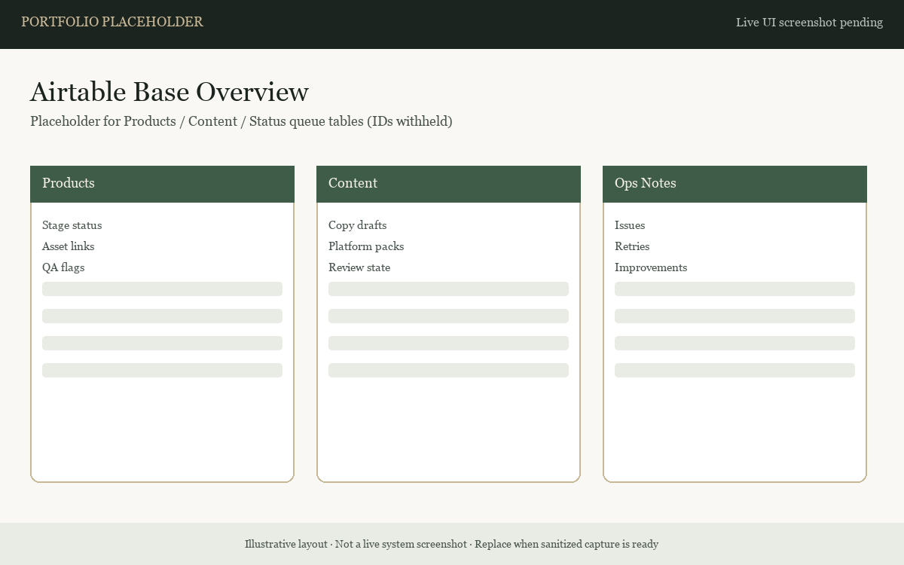
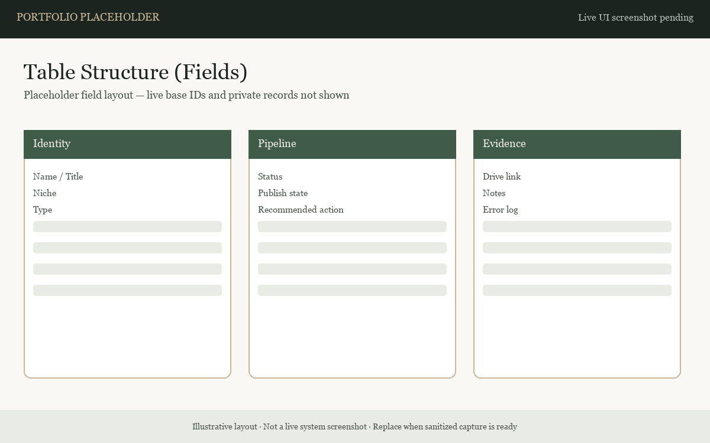

Projects / Airtable
Airtable Systems
Structured tables and fields for workflow stages, statuses, and issue tracking — described without publishing private base contents.
Functional Build
Diagram + placeholders
Role in the stack
Airtable is the queue and data backbone for GH-X automation stages. n8n stages read work items, act, and write status so the next stage can proceed. Issue and QA notes support classify → fix → retest loops.

Structure described publicly — private base contents are not published.


What the public pack covers
- Queue-oriented planning for workflow stages
- Status fields for stage tracking
- Issue / QA note patterns for continuous improvement
- How Airtable pairs with n8n for operational consistency
What is withheld
- Private base IDs, share links, and record dumps
- Credentials and automation tokens
- Full field schemas that would enable cloning proprietary ops
Current status
- Documented planning + definition usage
- Public visuals: diagram + labeled placeholders (live UI capture still preferred)